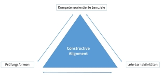

Kompetenzorientierte Lernziele für die Gestaltung von Hochschulunterricht und Prüfung
Die Entwicklung kompetenzorientierter Lernziele ist kein Selbstzweck. Damit die Studierenden die gesetzten Lernziele erreichen können, bedarf es angemessener Lernumgebungen, die entsprechende Lehr- und Lernaktivitäten von Lehrenden und Lernenden ermöglichen. So wird es in einem herkömmlichen Frontalunterricht (Vorlesung mit 100 und mehr Teilnehmern) nicht möglich sein, Problembearbeitung zu erlernen. Umgekehrt ist der reine Erwerb von Faktenwissen in einer kleinen Lerngruppe eine verlorene Chance. Ebenso bedarf es angemessener Prüfungsformen, um sicherzustellen, dass die Lernziele auch erreicht wurden.

Das Zusammenwirken von Lernzielen, Lehr- und Lernaktivitäten und Prüfungsformen wurde von Biggs & Tang (2011) als Constructive Alignment beschrieben.
Dieses lehr-lerntheoretischen Modell, das sich schon im Namen an den Konstruktivismus anlehnt, beschreibt die konsequente Ausrichtung des Hochschulunterrichts auf den Erwerb von kompetenzorientierten Lernergebnissen.
Hierzu müssen zunächst Lernziele und die Gestaltung der Lehr-und Lernaktivitäten aufeinander abgestimmt werden.
Das Modell fokussiert auf den Erwerb höherer Kompetenzstufen wie Problemlösen. Hierzu bedarf es entsprechender Lernumgebungen, die selbstgesteuerte Lernprozesse beim Studierenden ("deep learning" im Gegensatz zum "surface learning") unterstützen. Dies können zum Beispiel kollaborative Lernsettings sein ("POL"- Problem orientiertes Lernen in moderierten Lerngruppen).
Der Einsatz neuer Lerntechnologien ist in diesem Zusammenhang ebenfalls denkbar.
Folgerichtig müssen auch die Prüfungsformen sowohl den Lernzielen als auch den Lernaktivitäten angepasst werden (zum Beispiel durch den Einsatz von Portfolios).
Möglich ist auch eine andere Reihenfolge der Ausrichtung: Zunächst Entwicklung der Lernziele und Prüfungsformen und dann Umsetzung in entsprechenden Lern-Lehraktivitäten. Beide Wege sollten zu demselben Ergebnis führen.
Constructive Alignment versteht sich nicht nur als Handlungsanweisung für Lehrende und Lernende, sondern bedarf ebenfalls der institutionellen Unterstützung durch die Hochschule oder Universität durch die Schaffung der entsprechenden Freiräume bei der Gestaltung von Hochschulunterricht und Prüfungen